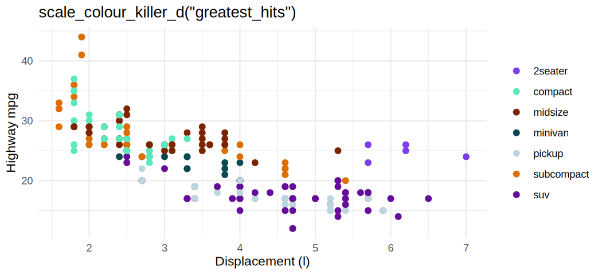
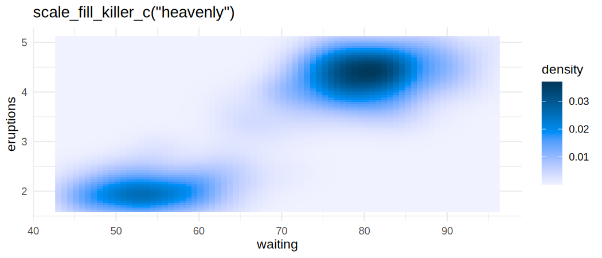
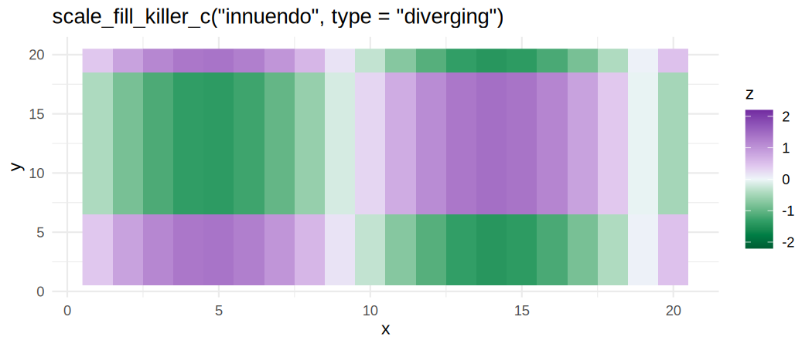
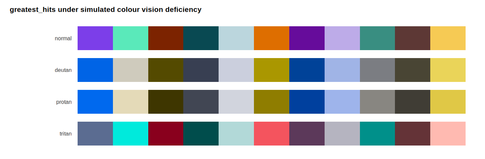

48 colour palettes derived from the fifteen Queen studio album covers — a qualitative, a sequential and a diverging palette for every album, plus a greatest_hits set drawn from the whole catalogue.
Every palette is built to be used, not just admired:
- Colourblind-friendly. Colours are chosen by an optimiser that maximises the worst-case CIEDE2000 separation under simulated deuteranopic, protanopic and tritanopic vision — not by eyeballing a cover and hoping.
- Contrast-friendly. Every qualitative swatch clears the WCAG 2.2 3:1 non-text contrast minimum against white or black, so palettes work on light and dark backgrounds.
- Greyscale-safe. Sequential ramps are strictly monotone in lightness and diverging ramps are monotone within each arm, so they survive being printed in black and white.
-
Checkable.
killer_check()reports the numbers, so you never have to take the claims on trust.
Installation
# install.packages("pak")
pak::pak("noahweidig/killerpals")Quick start
library(killerPals)
library(ggplot2)
ggplot(mpg, aes(displ, hwy, colour = class)) +
geom_point(size = 2) +
scale_colour_killer_d("greatest_hits")
plot of chunk example-discrete
The scale suffixes follow ggplot2’s own convention:
| Suffix | Scale | Default palette type |
|---|---|---|
_d |
discrete | qualitative |
_c |
continuous | sequential |
_b |
binned | sequential |
…each in scale_colour_* and scale_fill_* form, with scale_color_* aliases.

plot of chunk example-continuous
For values either side of a meaningful midpoint, ask for the diverging type and say where the midpoint is:

plot of chunk example-diverging
The palettes
Palette names nod to the album they come from — flash for Flash Gordon, opera_night for A Night at the Opera, robot_news for News of the World.
library(killerPals)
killer_names()
#> [1] "regina" "mirror_queen" "heart_attack" "opera_night"
#> [5] "race_day" "robot_news" "all_that_jazz" "game_on"
#> [9] "flash" "hot_space" "the_works" "kind_of_magic"
#> [13] "miracle" "innuendo" "heavenly" "greatest_hits"
head(killer_palette_info(type = "qualitative"), 4)
#> name album year type n
#> 1 regina Queen 1973 qualitative 8
#> 3 heart_attack Sheer Heart Attack 1974 qualitative 8
#> 2 mirror_queen Queen II 1974 qualitative 8
#> 4 opera_night A Night at the Opera 1975 qualitative 8
#> blurb
#> 1 Smoke, spotlight and stage-purple from the 1973 debut.
#> 3 Oiled, exhausted and lit in sickly green - the 1974 pile-up.
#> 2 The mirrored Mick Rock portrait: side White against side Black.
#> 4 Heraldic crest colours: cream, gilt and deep operatic red.Using the colours directly
killer_pal("flash")
#> <killer_palette> flash (qualitative, 8 colours)
#> Flash Gordon (1980) - Ah-ah! Saviour of the universe: comic-strip red, gold and void.
#> #EDB900 #416D8C #75291A #D8D3AD #8CC5E9 #755E5D #687E11 #9A8D7B
# Ramps interpolate to any length, through CIELAB
killer_pal("heavenly", n = 5, type = "sequential")
#> <killer_palette> heavenly (sequential, 5 colours)
#> Made in Heaven (1995) - Montreux at dusk: lake blue, alpine grey and the last light.
#> #F1F2FF #9EBEFE #0091FA #0563A3 #00385A
# Reverse with direction = -1
killer_pal("innuendo", n = 5, type = "diverging", direction = -1)
#> <killer_palette> innuendo (diverging, 5 colours)
#> Innuendo (1991) - Grandville's Victorian engraving, hand-tinted and ornate.
#> #722CA1 #B98CD3 #EEF6F9 #54AF7C #005D33Checking the accessibility claims
Don’t trust the README — run the audit:
killer_check("greatest_hits")
#> <killer_check> greatest_hits (qualitative)
#> colours: 11
#> worst-case CIEDE2000 separation by vision type:
#> normal 14.6
#> deutan 13.3
#> protan 12.7
#> tritan 12.5
#> contrast vs white: 1.52 - 10.08
#> contrast vs black: 2.08 - 13.80
#> lightness (L*): 27.9 - 83.9
#> monotone lightness: FALSEmin_distance is the worst-case CIEDE2000 gap between any two colours in the palette, under each vision type. Roughly speaking, 1 is the smallest difference a person can detect and 10 is comfortably distinguishable at a glance.
You can see the same thing:
killer_cvd_grid("greatest_hits")
killer_check() works on any colours at all, so you can audit palettes that have nothing to do with this package. Here is rainbow(8), the classic example of a palette that falls apart for red-green colourblind readers, next to a killerPals palette of the same size:
min(killer_check(colours = grDevices::rainbow(8))$min_distance)
#> [1] 0.9610308
min(killer_check("flash")$min_distance)
#> [1] 17.25737How the palettes were derived
data-raw/build_palettes.py does the work:
- Each cover is quantised in CIELAB with k-means to get candidate colours, weighted by how much of the cover they occupy and by how colourful they are, so foreground artwork beats background paper.
- Qualitative palettes greedily pick the most separable candidates, then refine each swatch within a bounded neighbourhood of its seed — so the palette stays recognisably tied to the album art while the optimiser pushes the worst-case colourblind separation up.
- Sequential ramps are built on each album’s distinctive hue: the hue it has more of than the catalogue average. Picking the merely dominant hue made almost every ramp orange, because so many of these covers are sepia or warm-lit.
- Diverging palettes use a hue pair that stays separable under every simulated vision type, measured at the geometry the dark arm endpoints actually use.
Reproduce it end to end with:
A note on the album covers
The covers are copyrighted artwork. This package does not redistribute them: they are downloaded locally by data-raw/download_covers.py, read only as input to the colour derivation, and git-ignored. What ships is colour values and swatch images generated by this package — colours themselves are not copyrightable.
killerPals is an unofficial, non-commercial tribute. It is not affiliated with, endorsed by, or connected to Queen, their members, or their rights holders. Queen’s crest is a trademark of its owners and is not reproduced here; the hex logo is an original design.
Related work
If you want palettes with different priorities: viridis for perceptual uniformity above all, RColorBrewer for the classic cartographic sets, paletteer for a catalogue of nearly everything.
Code of Conduct
Please note that this project is released with a Contributor Code of Conduct. By contributing, you agree to abide by its terms.